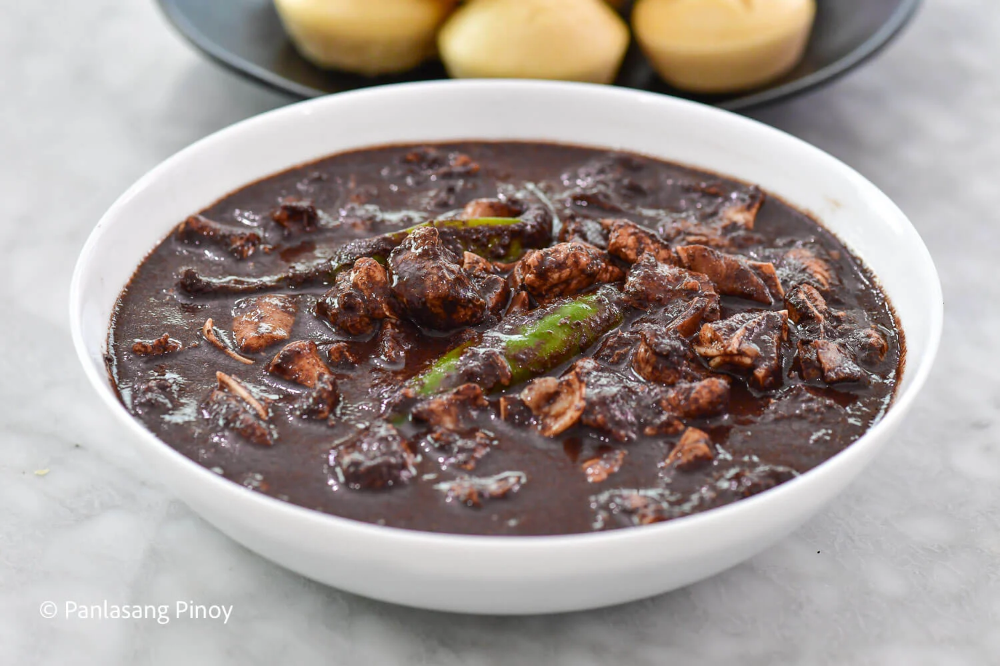

Dinuguan

Ingredients
- 1 lb pork belly, cut into small cubes
- 1/2 lb pork liver, chopped
- 1 onion, chopped
- 3 cloves garlic, minced
- 2-3 cups pig's blood (fresh or frozen)
- 1 cup vinegar
- 1 cup water
- 2-3 green chilies, chopped (optional for heat)
- 2 tbsp fish sauce
- Salt and pepper to taste
- 2 tbsp cooking oil
- 1/2 tsp sugar (optional)
Instructions
- Heat cooking oil in a pan and sauté garlic and onion until softened.
- Add the pork belly cubes and cook until browned and slightly crispy.
- Add the pork liver and cook for an additional 2-3 minutes until browned.
- Pour in the vinegar and cook for a minute, allowing the vinegar to reduce slightly.
- Pour in the water and bring the mixture to a boil.
- Once boiling, lower the heat and add the pig's blood, stirring until the blood is evenly mixed. Simmer for 15-20 minutes, stirring occasionally.
- Add the green chilies, fish sauce, salt, and pepper. Adjust seasoning to taste.
- If desired, add sugar to balance the acidity of the vinegar.
- Continue simmering until the sauce thickens and the pork is tender.
- Serve hot with steamed rice or puto (rice cakes) on the side.